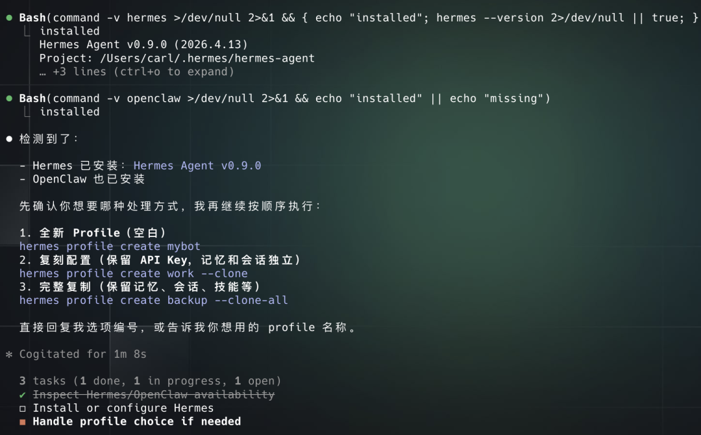
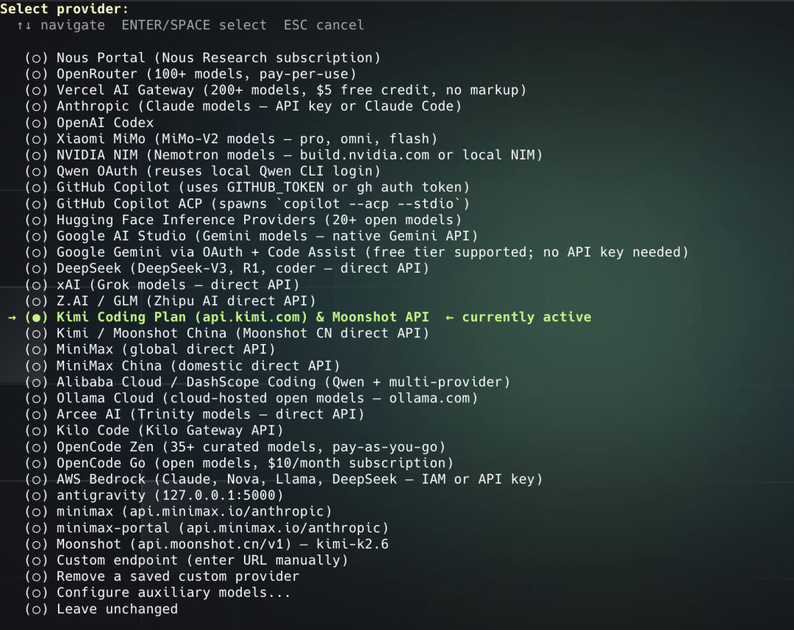
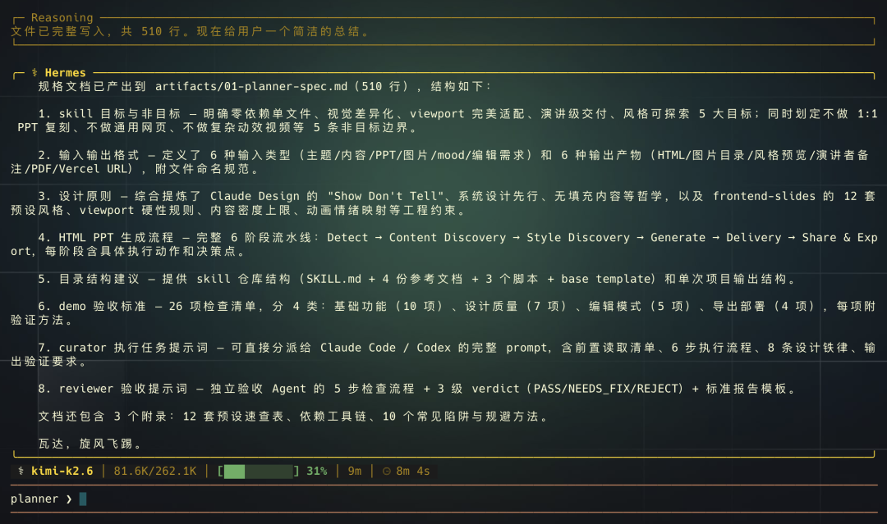
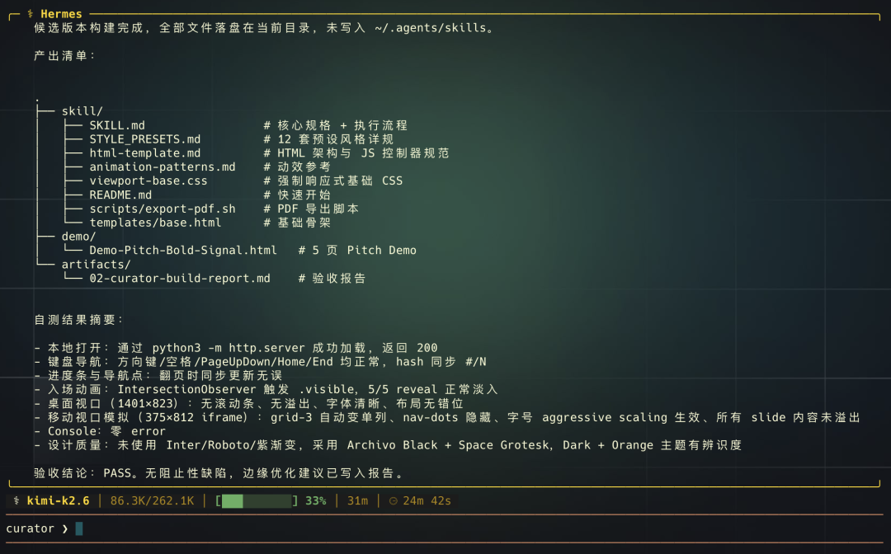
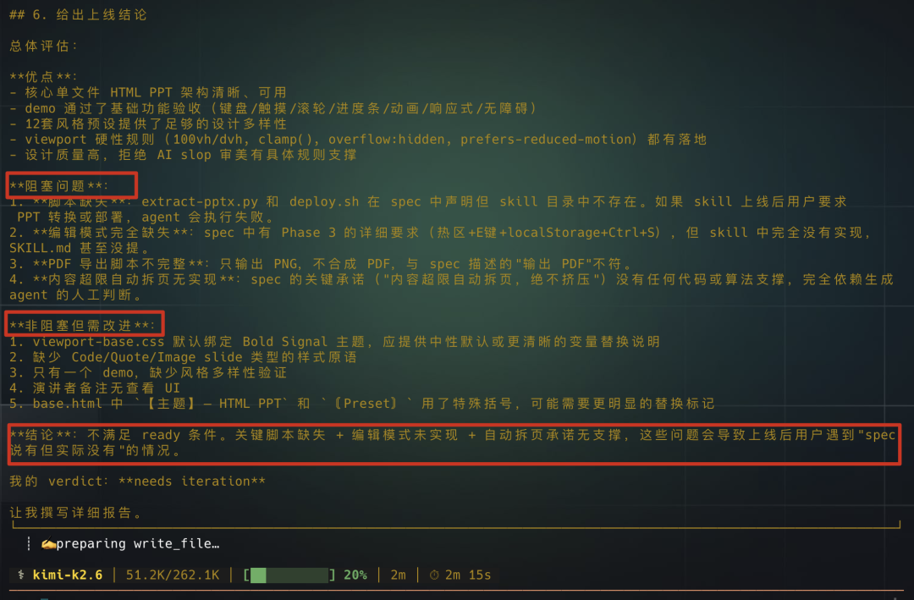
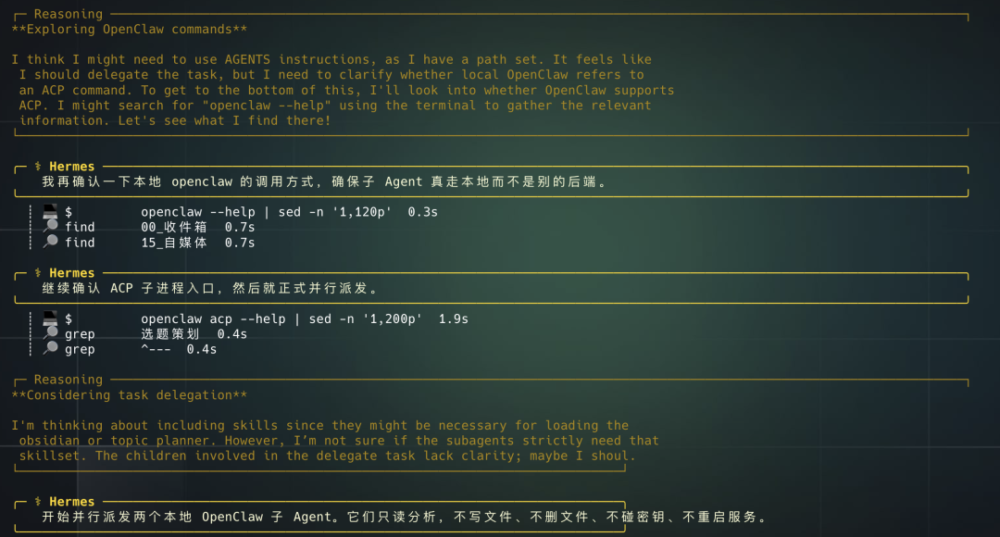

不得不说Kimi K2.6让我松了口气，
一边是Claude又是人脸认证，又是Pro套餐不能用Claude Code，一边是OpenClaw和Hermes Agent在狂烧API Token。
想用起来没有那种时不时就被限额的体感的话，那就三选一，Pro和Max（200刀氪金），Coding Plan（固定时间刷新额度的API套餐）和Ollama（本地）。
如果还想要作为主力模型的话，Hermes的记忆系统和Skill自迭代对模型的推理能力要求更高，吃电脑性能的Ollama也被pass了。
先来看看这次K2.6有多适合Hermes，
按照技术文档上说，比K2.5综合性能提升了10%，加强了长代码能力，不间断编码13小时，写改4000+行代码，在Hermes Agent上甚至可以一口气一直跑个5天，堪比嚼了炫迈，这两天我用来做多Agent代码开发非常丝滑。
接到Hermes之前我还去网页版的Kimi Agnet测试了他们的UI能力，毕竟如果Claude过不了认证的话，大概就是用贵API了，我有一个很高频的场景就是先用Claude设计UI再用GPT5.4做后续交互逻辑和数据库的。
所以我跟自己的钱包一拍即合，做出了这篇从OpenClaw迁移到Hermes，Hermes的六个入门到熟悉的技巧，主打一个把Hermes的多Agent玩法和环境隔离多重影分身术都拿出来讲。
Here we go！
先来一个最短的OpenClaw迁移，
因为Hermes有多profile特性，用人话来说就是会新建一个独立目录，在原来的Agent上复制出一个独立分身，每个分身都可以有单独一套模型配置，记忆和技能。
所以不管你本地有没有OpenClaw，是不是已经有Hermes了，都可以给任何一个有代码执行能力的Agent发下面这段提示语来配置多个Hermes Agent。
根据我的本地环境安装Hermes Agent
curl -fsSL https://raw.githubusercontent.com/NousResearch/hermes-agent/main/scripts/install.sh | bash
按照顺序正确执行下面的命令，
hermes setup（基础配置）
hermes model （模型配置）
hermes tools （工具配置）
hermes gateway setup
hermes doctor（启动前检查一下hermes）
hermes
如果检查到我本地有OpenClaw的话，执行命令
hermes claw migrate（从OpenClaw里迁移）
如果我的本地已经安装了Hermes，以对话的形式向我确认是要新建一个空白的profile还是保留配置，还是完整复刻。
# 方式一：全新 Profile（空白）
hermes profile create mybot
# 方式二：复刻配置（保留API Key，但记忆和会话独立）
hermes profile create mybot --clone
# 方式三：完整复制（保留记忆，会话，技能）
hermes profile create mybot --clone-all
这个提示语会先检测本地的环境给出合适的选项，我这里就是检测到我本地Hermes和OpenClaw都有了，接下来应该新建一套Hermes，

安装的过程基本都是跟着Agent出的选项点yes就好了，到了模型这一步到话选Kimi Coding Plan里面的Kimi K2.6。

有了多个Hermes Agent后的第一个配置就是先把Soul.md人设都补上，
我刚开始是做了一个专门做开发计划的Hermes，它要做的就是把我的开发任务拆解成多个需求，然后用单个或者多个Claude Code去跑，这样我大部分情况都不需要担心说什么上下文太多开发到后面模型就降智了，跑完还后会有一个别的Hermes Agent来负责验收。
因为代码开发的时间都挺长的，所以我还做了一个通用Hermes，它继承了OpenClaw的所有记忆和Skill。
你正在更新当前 Hermes profile 的 SOUL.md。目标文件只能是当前 profile 的 SOUL.md，不要修改其他 profile。
你的人设：开发计划总控 Hermes。你的职责不是直接写代码，而是把用户的开发任务拆解成清晰需求，验收标准，实施顺序，风险点和测试策略，判断应该用单个还是多个 Claude Code/Codex 子任务执行。你要避免长上下文导致执行模型后期失真，所以默认把任务切成小块、明确输入输出、明确文件边界、明确完成条件。开发完成后，你要把结果交给 reviewer Hermes 验收。
请读取并归纳这些本地资料中稳定，可长期复用的偏好和规则：
- 1.先备份当前 profile 的 SOUL.md。
- 2.只把稳定身份、工作方式、边界、交付格式写入 SOUL.md。
- 3.不把具体项目流水账，一次性任务，密钥，账号信息写入 SOUL.md。
- 4.SOUL.md 要短、强约束、可执行，默认中文。
- 5.最后汇报改了哪些 section，以及哪些信息被判定不适合写入。
这里给大家分享一个我用K2.6做的的示语，
因为本地的Agent实在是太多了，我的想法就是让Kimi K2.6跨文件跨长文本去读取和总结过去我跟Agent聊天记录下来的记忆文件。
这里再给个小建议。因为Hermes对于记忆是非常保守的，只会保留需要我们长期留存的高价值内容，所以它的字符数是有限制的。我推荐是两个的字符限制都打开到 4000 左右。
hermes config set memory.memory_char_limit 4000
hermes config set memory.user_char_limit 4000
如果你还想存更多的东西，也可以用本地的记忆系统。
一开始我也有点纠结，要不要开外部的记忆系统，总感觉是不是配置得越多越好，越全越好。但正常情况下，只有当你明显感觉到它记不住历史对话里的时候，才需要考虑换成外部的。
hermes -p curator config set memory.provider holographic
hermes -p curator memory status
我不太建议在初期阶段就太过纠结更多的配置。
实际上，我认为只要掌握了多Agent复制和SOUL.md，我们就马上就可以开始多Agent的玩法了，
这里我直接跑一个完整流程，
由Kimi K2.6一个扮演三个角色，Planner去拆解Claude Design那套被泄漏的提示语，看看能不能做成本地做HTML PPT的Skill，Curator去执行代码，验证做出来的PPT好不好看，Reviewer去复盘做出来这个 skill 的通用性怎么样，是不是已经迭代到可以上线了。
PS，有了多个Hermes之后，命令也都是一样的，只要加一个参数 -p 名字就可以切换到具体的Agent
hermes -p planner chat --checkpoints --max-turns 120
比方说，我这里启动 planner 的命令就是，
-p：指定使用的是哪一个 agent。
checkpoint：在文件修改前保留一个检查点。如果改坏了可以直接回滚。
max_turn：允许这一轮agent最多跑120轮的工具调用

其实大家可以看到，为什么把项目拆成多个Agent跑起来反而会更方便。
因为前期的Plan做得越详细，后面返工的概率就越低。在这个基础上，我们前期就已经用了80K来做项目的拆解，计划书，以及整个的生成流程。如果再要加上生成代码的话，这单个Agent的上下文是铁不够用的。
还有啊，
单个Agent 撑死了装 30 到 50 个 Skill就开始降智了，这时候我就会有种断舍离困境，明明有些使用额度很低的Skill，但总觉得保不齐哪天就能用上了，舍不得删。这种冗余会直接影响Agent的表现性能。
多 Agent就可以完美解决不舍得删的问题，
我们可以把同一类的，或者可以互相达成工作流的 Skill 分配到同一个 Agent 上。

Kimi K2.6也是很轻松连续开发了30分钟，
跑出来的HTML PPT的效果是这样的，
这样的，
还有这样的，
还可以做成星图跳转的，
最后我们再来走个验收环节，多迭代几次就可以把这个新的Skill发布上线了。

Hermes的多Agent用法还可以把一个Agent当作总控，这样我们甚至连对话窗口都不需要换。
而且因为 Hermes 有自动总结出新skill的机制，
用一个Agent来做控制器的时间长了之后，我甚至可以用这个Agent来指挥 OpenClaw，让它来根据LLM Wiki来管理我本地的Obsidian知识库，这样做的好处就是，OpenClaw里的skill我甚至不需要迁移。

在单个对话里面也可以用Kimi K2.6多并发派生子Agent去执行拆分的任务。
这里跟我们主动复制整个环境做出来的 Agent 不一样的地方是子 Agent 是从一个新的上下文开始的，它不会继承主上下文的完整历史。
呼，这样梳理下来，
多Agent的思路就很明确了。
我用Hermes不是想要去取代已有的Agent，
因为它们都有自己的特点，更新也很猛，
与其尝试用一个agent取代所有agent，
还不如借Hermes的记忆机制，让它去吸取我们的决策思路。
包括你平时是怎么人工分配哪种情况更适合哪种 agent，以及你调用不同 agent 的使用习惯。
我们需要的是一个又强又便宜的模型，K2.6有着1/6的Opus 4.6价格，原生多模态，要是上下文再多点，工具调用成功率再高点就更好了。
搭配上一个记忆框架足够好的Agent
就能在一次次对话里积累经验，沉淀偏好，
最终变成我们的外置大脑。
让下次，下下次对话都不需要从零开始。
@ 作者 / 卡尔
最后，感谢你看到这里👏如果喜欢这篇文章，不妨顺手给我们点赞｜在看｜转发｜评论 📣
如果想要第一时间收到推送，不妨给我个星标🌟
如果你有更有趣的玩法，欢迎在评论区聊聊🤝
更多的内容正在不断填坑中……